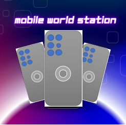
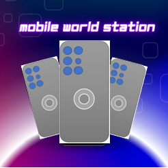

Home iPhone Samsung accessories Services Trending & Offers About Us Contact Us Register Form
We offer outstanding convenience, choice and value Established in 2008, Mobile World Station is a leading UK general merchandise retailer offering more than 5,000 products Mobile World Station is a technology-led retailer; its website receives more than a million visits a year and 70% of sales originate online. Its market-leading Fast Track delivery service is available across more than 90% of UK postcodes, seven days a week, and offers home delivery .The Mobile World Station is a successful and growing business at the heart of the mobile phone sector which serves diverse customers through our retail. For retail customers, Mobile World Station Online has become a byword for mobiles, parts, accessories, services, and repairs through our four outlets in Loughton, Letchworth & Hitchin. Mobile World Station's success to date has mainly been built on our dedication to providing excellent customer service, treating each customer as special and going the extra mile, whenever necessary, to find the right products and services.